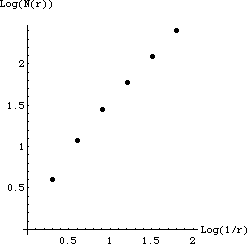

| 4(b) |
| r | N(r) | 1/r | Log(1/r) | Log(N(r)) |
| 1/2 | 4 | 2 | 0.30 | 0.60 |
| 1/4 | 12 | 4 | 0.60 | 1.08 |
| 1/8 | 28 | 8 | 0.90 | 1.45 |
| 1/16 | 60 | 16 | 1.20 | 1.79 |
| 1/32 | 124 | 32 | 1.51 | 2.09 |
| 1/64 | 252 | 64 | 1.81 | 2.40 |
|
 |
| First, how is N(r) determined? For r = 1/2, 1/4, 1/8, ...,
a unit length line segment is covered by 2, 4, 8, squares of side length r. That is, 1/r squares
of side length r. The top and bottom sides of the square can be covered by 2⋅(1/r) squares of
side length 1/r. Similarly for the left and right sides, except that the top and bottom covering
squares of these sides already have been counted in covering the top and bottom. So to cover all four sides takes |
| 2⋅(1/r) + 2⋅(1/r - 2) |
| squares of side length 1/r. |
| The dimension is the slope of this line. The left-most points don't seem to fall on the line, but
for example the right-most pair give slope |
| (2.40 - 2.09)/(1.81 - 1.51) = 1.03 |
| So it appears that the dimension is 1. This is expected for a shape made of four line segments, each of dimension 1. |